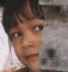
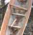
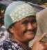
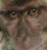
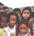
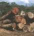
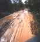
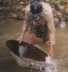

| Mensen: Nieuwsgierigheid |  | Wat ons steeds weer opnieuw verbaasde, was de nieuwsgierigheid van de lokale bevolking. Hoe verder we het binnenland introkken, hoe minder privacy we hadden. |
| Mensen: Vakmanschap |  | In de binnenlanden, waar de mensen vrijwel geheel aan zichzelf zijn overgeleverd, houdt men zich bezig met allerlei ambachtelijke beroepen. |
| Mensen: Overige opvallende eigenschappen |  | Een verzameling van eigenschappen van Kalimantan-bewoners die ons ook erg opviel. |
| Mensen: Omgang met dieren |  | Vaak wordt er keihard met dieren omgesprongen, maar niet zonder doel. Soms worden dieren echter juist vertroeteld. |
| Mensen: School en kinderen |  | Veel kinderen die vrijwel nooit blanken zien, blijven je aanstaren. Als de verlegenheid overwonnen is, reageren ze meestal blij en enthousiast. |
| De houtkap |  | Nog maar 5 à 10 procent van het primair oerwoud staat overeind. Alleen in de bergen, waar bulldozers niet kunnen komen, is het oerwoud nog ongerept. |
| Slechte wegen |  | Goede wegen zijn er bijna niet. De kwaliteit van het asfalt is inferieur en de extreme regenval sloopt de wegen. |
| Werk |  | Enkele beelden van werkende mensen. |